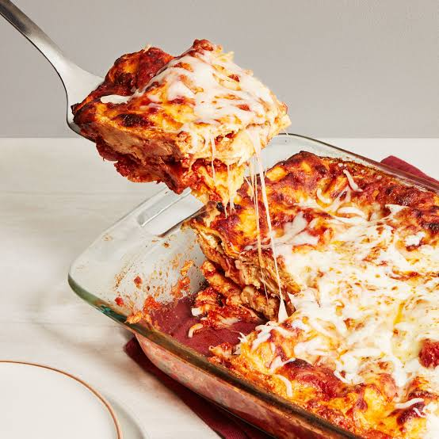

THE ODIN'S RECIPES
Home page

Lasagnas

Ingredients
- Lasagnas pastas
- Tomatoes
- Bechamel cream
- Beef meat
Steps
- You have to put on layer of pasta, one of cream, one of tomatoes sauce and one of meat.
- Reapeat this operation 3-4 times and finish by a pasta layer.
- On top, you can add some cheese and spices.
- Put the lasagna in the oven for 30-40 minutes at 180°C.
Tips
You can add some vegetables in the layers, like mushrooms or zucchini.
You can also add some spices in the meat, like pepper or paprika.
You can also add some cheese in the layers, like mozzarella or parmesan.
You can also add some herbs in the layers, like basil or oregano.
You've prepared a delicious lasagna! Enjoy your meal!